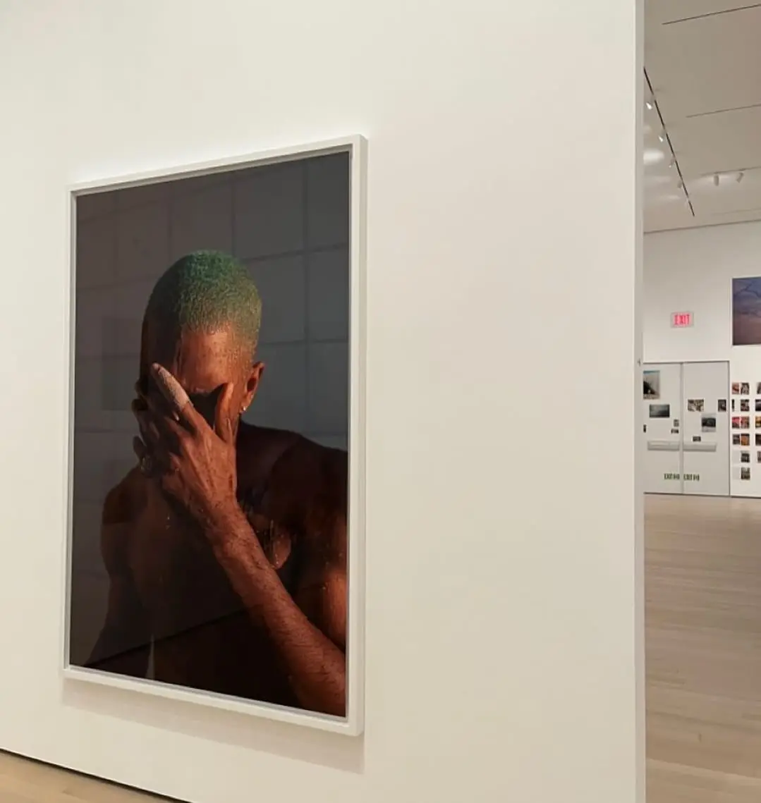
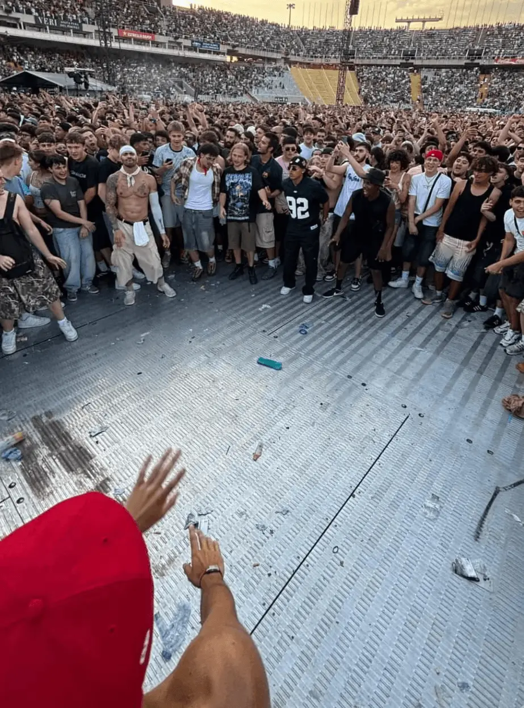

WELOVEURBAN ©
WELOVEURBAN ©
WELOVEURBAN ©
No se puede gestionar el talento si no se entiende primero qué es lo que nos rompe y lo que nos repara.
Colaboración estratégica en la gestión y desarrollo de una de las plataformas pioneras de cultura musical urbana, centrada en la intersección entre el arte, la psicología y el bienestar emocional.
Mi paso por @weloveurban (IG) no fue planeado. Nació de una conversación, de un interés común y de la necesidad de poner palabras a lo que se siente cuando cierras los ojos y el mundo desaparece. La forma de procesar la realidad a través del sonido.
First Experience | In Rainbows.
Psicología del Vínculo | BoJack & In Rainbows.
Rigor y Transparencia | Robe & Extremoduro.
El Coraje de la Supervivencia | BoJack & Weird Fishes.
"Earth without art is just a rock"
A lo largo de los últimos meses he podido desarrollar mi pasión por el arte, en concreto sobre la MÚSICA. — Cautivadora de corazones. Recopiladora de historias y emociones. Culpable de mis pasiones. Sinónimo de alma dulce. Y que la vida me ilustre.
Junto a infinitas conversaciones y experiencias compartidas, he podido formar parte y participar dentro de esta hermosa comunidad. Además de numerosas recomendaciones, he tenido el placer de colaborar de forma activa en varias publicaciones y análisis metafísicos y sonoros.
A lo largo de estas vivencias, he tratado temas como…
La sensación de la primera vez | In Rainbows | Radiohead.
El asombro de perderse en la música y el tesoro de una primera experiencia. Y qué gran experiencia - y mejor álbum.
La Psicología del Vínculo | All I Need | Radiohead.
La profunda necesidad de ser "visto" y amado. Esa breve línea entre el orden y el caos, entre el amor y la autodestrucción. Las dualidades de la vida… llenas de contradicciones coherentes, como un abrazo helado que te llena de calor. El significado del amor verdadero: ser feliz por uno mismo, para serlo aún más junto a la persona que amamos. El amor debe sentirse libre. Debemos ser capaces de volar, y a veces, saber dejar a otros volar.
El Elogio de lo Imperfecto | Robe & Extremoduro | Material Defectuoso.
Frente a un mundo de filtros y marketing vacío, la reivindicación de la verdad desnuda. Analizar a Robe es entender que el camino se inventa a cada paso, y que ser transparente —aceptando nuestra propia "materia defectuosa"— es la única forma de caminar con orgullo (o al menos empezar).
El Coraje de la Supervivencia | BoJack & Weird Fishes.
Aquí la música y la narrativa chocan con el abismo. No escribí este análisis desde la técnica, sino desde la supervivencia. He analizado el terror de tocar fondo - no como un lugar para coger impulso - para llegar a la única conclusión que importa: el abismo no es una oportunidad para descansar, es el riesgo de dejar de existir. Hace falta coraje para vivir.
Hablar sobre la romántica falsa ilusión del suicidio fue complicado. Recibir respuestas de personas diciendo que esas palabras les han servido de oxígeno en sus horas más oscuras fue mi confirmación definitiva. Vale la pena. La sensibilidad es sinónimo de fortaleza.
— me and my mixed music taste against the world.




© Selected Works こんにちは
(WDX® — 02)
Digital Designer
Más Proyectos©
Más Proyectos©
Más Proyectos©
© Help Center ヘルプ
(00)
Clarifications

Aclarando Cuestiones. Empezando un Proceso Real y Honesto.アンサー.
Soy feliz, y eso es mucho. Soy realista, aun así elijo tener una buena perspectiva. Soy consciente de quién soy y de mi entorno. Eso me permite actuar de forma genuina y real. Aún así, a veces es necesario lanzarse a la aventura. "Caminante no hay camino, se hace camino al andar". A veces debemos dar el primer paso, y crear nuestro destino en consecuencia.
Aporto una arquitectura de pensamiento orientada a la automatización de procesos vacíos. Mi objetivo es usar la tecnología para liberar el tiempo necesario que requiere la verdadera gestión humana: el diálogo y el bienestar.
Sigo marcos de Prompting Responsable. Entiendo la IA como un soporte, no como un decisor. Realizo auditorías manuales de sesgos para asegurar que los procesos de selección sean siempre justos, diversos e inclusivos.
Porque para encontrar talento hay que saber escuchar lo que no se dice. Mi colaboración en medios digitales me ha enseñado a descifrar narrativas y a conectar con audiencias internacionales. El arte me da la empatía y el contexto cultural que a veces los datos no pueden capturar.
Más allá de mi formación con la UPenn, el inglés es un idioma que ha estado presente en mi vida de forma constante. Lo aplico de manera práctica como Music Content Collaborator en Instagram, colaborando en una de las cuentas pioneras del sector musical. Mi vida técnica y mis aficiones giran en torno a este idioma: Música, Arte, Deporte, Lectura y Filosofía. Aunque siempre hay margen de mejora para alcanzar la excelencia, cuento con la capacidad necesaria para comenzar a operar en cualquier entorno
Busco el terreno donde transicionar y convertirme en el mejor profesional. Espero encontrar líderes que gestionen por confianza y sistemas que permitan que la innovación fluya. Busco la orilla donde mi capacidad encuentre su utilidad definitiva. Poder evolucionar.
No soy "vendehumos". Nadie es perfecto. Dicho eso, realmente me considero una persona completa. Me siento orgulloso de quien soy, desde lo personal hasta lo profesional, desde mis pasiones a mis actuaciones. Me siento capaz de actuar según lo esperable; y más importante, aprender y superarme.
© Final Section クロージング
(11)
Wrap


Adrián.
Talento
Tecnología
Innovación
(Cierre)
El futuro del trabajo
es una conversación.
Comencemos la nuestra.